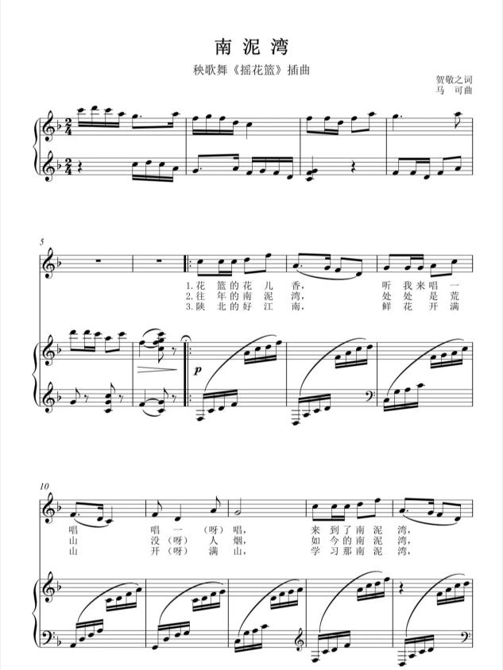
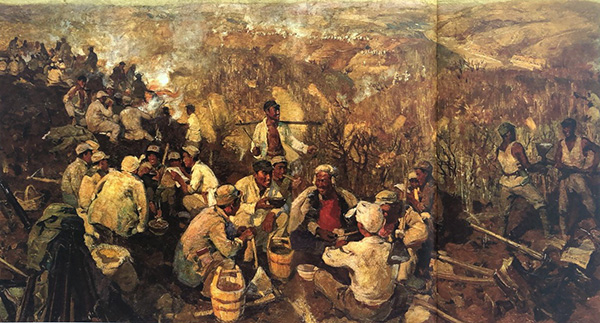
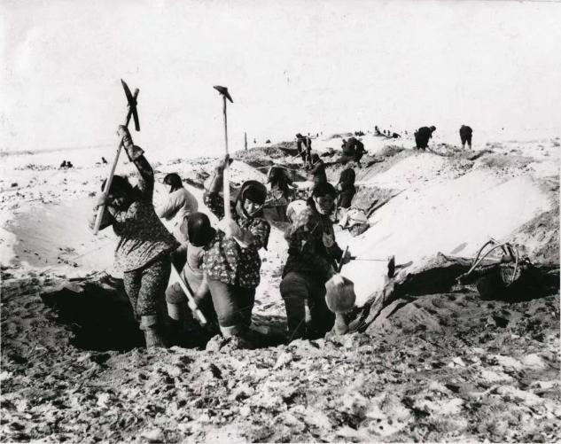
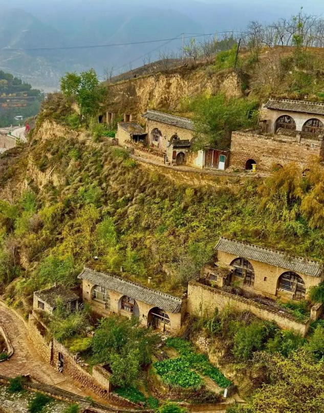
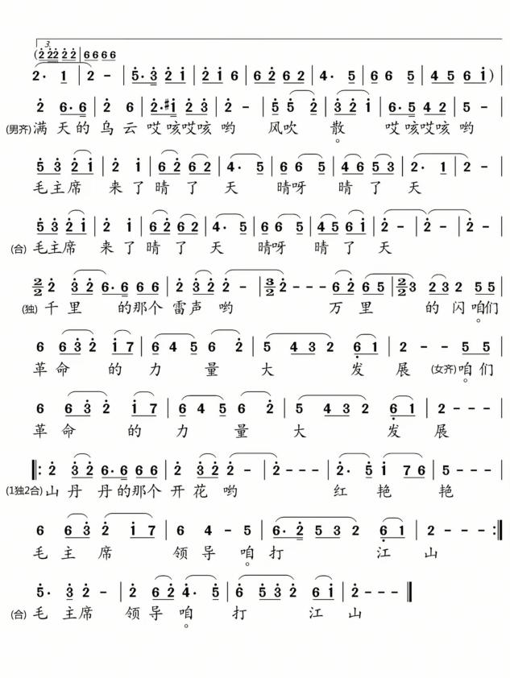
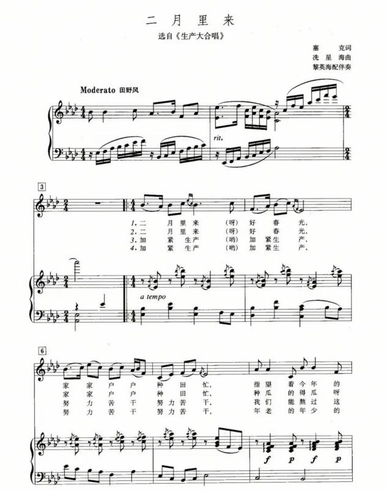
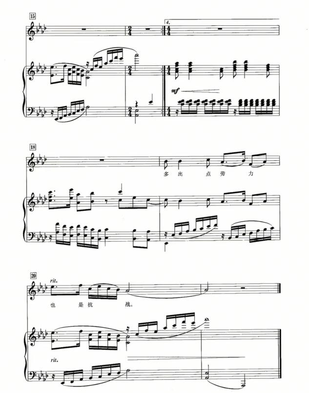
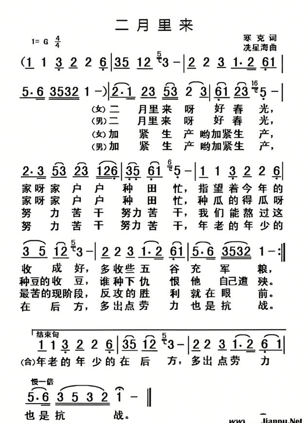
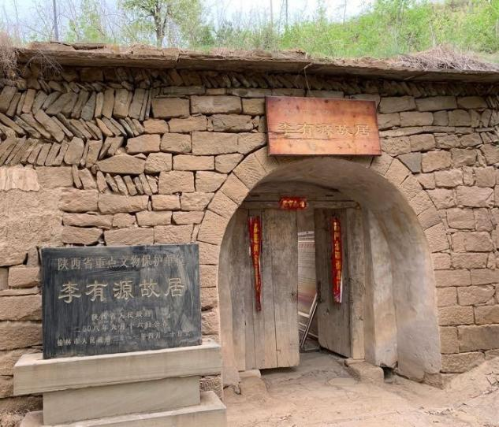
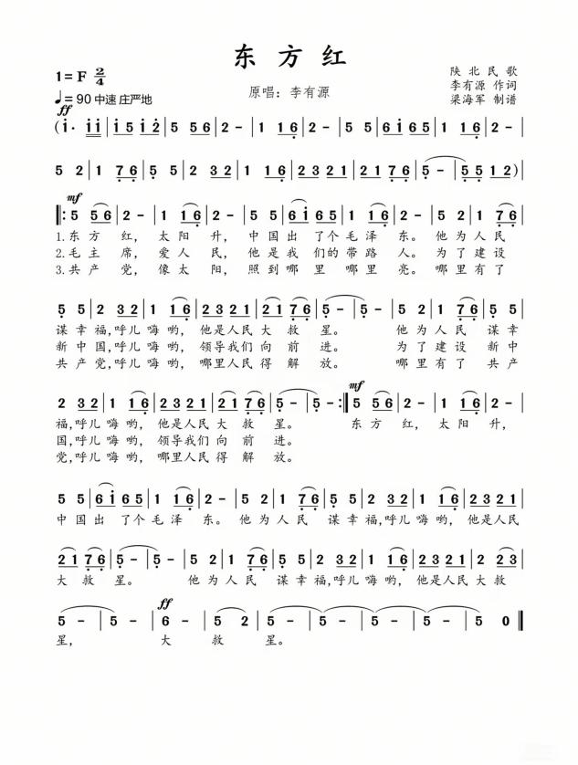

创作背景
《南泥湾》创作于1943年，贺敬之作词，马可作曲，是延安鲁迅艺术学院秧歌舞《挑篮》的插曲。1943年新春佳节，鲁艺秧歌队需要编排一组节目慰问陕甘宁边区“生产模范”第三五九旅全体官兵，鲁艺新秧歌运动工作委员会负责人安博找到诗人贺敬之，请他创作一首关于南泥湾的歌曲。19岁的贺敬之被三五九旅官兵开展大生产运动的热情所感动，接到任务的当天便写出了歌词，随后由作曲家马可采用陕北民歌调式谱曲。1943年2月5日农历正月初一，鲁艺秧歌队来到南泥湾，向三五九旅献上新编秧歌舞《挑花篮》。
抗日战争进入相持阶段后，国民党对陕甘宁边区实施军事包围与经济封锁，边区物资供给极度困难。为打破封锁、实现自给自足，八路军120师三五九旅进驻原本荒草遍地、野兽出没的南泥湾。1941年春，三五九旅6个团11958人在旅长王震带领下分批开进南泥湾，官兵们开荒垦地、修建窑洞、兴修水利，依靠双手艰苦奋斗，将昔日荒凉的“烂泥湾”改造为良田连片、物产丰饶的“陕北好江南”。歌曲以艺术形式记录大生产运动，歌颂自力更生、艰苦奋斗的南泥湾精神。
音乐艺术特征
节拍为2/4拍，五声徵调式，属陕北秧歌舞曲体裁，整体调性明亮稳定。乐曲采用对比单二部曲式（A+B）：A段（呈示段）四句，旋律平缓流畅，叙事性强，附点与连音线丰富旋律线条，情绪温柔舒展，描绘南泥湾秀丽风光；B段（展开高潮段）旋律音区抬高，节奏顿挫感增强，加入重音记号，情绪热情昂扬，抒发对大生产成果的自豪；尾声重复收尾乐句，最后采用五度上行的甩腔手法结束全曲，结构完整，歌舞律动性极强。作品融入陕北民歌特色滑音与小型装饰音，乡土气息浓郁，旋律通俗流畅，兼具群众性与艺术表现力。
教学目标
- 知识目标：了解南泥湾大生产运动历史，掌握秧歌舞曲体裁特点，识别五声徵调式的听觉色彩。
- 技能目标：能够连贯演唱歌曲，把握陕北民歌装饰音与滑音韵味，做到声断气不断。
- 情感目标：感悟自力更生、艰苦奋斗的延安精神，理解劳动创造美好生活的内涵。
演唱处理
气息轻柔连贯，音色甜美干净。A段抒情柔和，侧重营造田园意境；B段逐步提升音量，情绪上扬，表达赞美与自豪。演唱装饰音自然适度，不夸张，贴合秧歌舞质朴欢快的气质。
教学拓展
结合历史图片、开荒影像资料，对比南泥湾过去与现在的面貌；简单介绍秧歌舞这种延安时期群众文艺形式，理解文艺为人民服务的思想。





创作背景
《兰花花》是陕北经典信天游叙事民歌，属于民间集体口头创作。歌曲原型为陕北女子姬延玲（一说姬延琴），1919年出生于延安南川临镇街农民家庭。她心灵手巧、容貌俊秀，因喜爱穿蓝色底布上映有小百花的衣衫，被大家称为“兰花花”。姬延玲与一名擅长文艺宣传的战士互生情愫，但在封建礼教与包办婚姻制度压迫下，被迫嫁入地主富户人家，婚姻不幸，终日郁郁寡欢，最终不堪忍受命运的捉弄服毒自杀。
其恋人归来后，运用信天游调式编创歌词，以信天游手法写出对兰花花的回忆，将两次婚姻集中写成一次，将两任丈夫集中写成周家的“猴老子”，将兰花花真正心爱的人描写为情哥哥。歌曲经村里爱唱歌的人用信天游曲调迅速传唱，后经延安鲁艺音乐工作者收集整理并艺术加工，成为陕北民歌代表作。
实物遗迹：2025年11月底，临镇本土非遗代表性传承人王梅用自家三孔窑洞院落打造成“蓝花花的传说”陈列馆，以实物、史料还原姬延琴的真实一生，陈列有姬延琴孙子捐赠的寸照、她用过的纺线设备、复原的窑洞场景等。
音乐艺术特征
体裁为陕北信天游（山歌），调式分析存在学术讨论。通行记谱多采用五声羽调式（主音为la），为上下两个乐句组成的单乐段四句体，节拍为2/4拍，每一段的结束句都呈下行进行，多数段落结束音落在主音羽上。旋律开始部分以四度跳进的音程进行。有学者从信天游普遍风格出发认为商调式更近原貌：“这首民歌的记谱法，一种用的是‘羽（6）调式’，一种用的是‘商（2）调式’，现在通行的是前者，但依‘信天游’的普遍风格而言，‘商（2）调式’似乎更与原貌相近。”此外，该曲实为商羽调式交替，有学者指出“看其终止为D羽调式，看其开头为D商调式”。
情感层次丰富：前半段赞美兰花花的美丽纯真，旋律柔和深情；后半段情绪转为悲愤苍凉控诉封建礼教对人的压迫，叙事感染力极强。
教学目标
- 知识目标：认识信天游体裁，掌握上下句结构特点，了解陕北民歌与人民生活紧密相连的特点。
- 技能目标：学习长线条气息控制，高音松弛演唱，避免挤嗓喊叫；用音色变化完成故事叙事。
- 情感目标：体会旧社会底层人民的苦难，感受民歌承载的人文情感，尊重民间音乐文化。
演唱处理
气息深长稳定，声音通透开阔。叙述人物外貌时音色温柔、抒情；讲述悲惨遭遇时，音色下沉、情绪凝重，突出故事的悲剧感。把握信天游自由舒展的韵律，不要生硬卡死节拍。
教学拓展
欣赏不同歌唱家演绎版本，对比处理差异；了解陕北黄土高原自然环境如何塑造信天游高亢悠长的音乐风格。




创作背景
歌曲创作于1971年，李若冰、徐锁、刘烽、关鹤岩、冯富宽作词，刘烽作曲。1971年初，中央人民广播电台的一些老同志建议整理几首陕甘宁边区的革命民歌并进行加工创作，以庆祝中国共产党成立50周年。当年5月22日，中央人民广播电台文艺部采录组组长王敬之和编辑王惊涛来到陕西，同徐锁、李若冰、刘烽、关鹤岩、冯富宽等人组成工作小组到延安采风。
在延安第一招待所，大家整理出《咱们的领袖毛泽东》《军民大生产》《工农齐武装》和《翻身道情》4首歌曲，但大家觉得从形式上看缺少历史悠久、风格独特的陕北“信天游”，从内容上看缺少反映1935年10月中央红军到达吴起镇完成长征这一革命大转折的作品。这些想法使大家很快达成共识，通过共同选定的两首民歌素材——陕北“信天游”和陇东的《十八姐担水》，创作出了《山丹丹开花红艳艳》。歌词创作完成后，由刘烽根据两首民歌旋律整理成完整的歌曲。
1971年底歌曲完成后，陕西省歌舞剧院演员杨巧担任首次领唱。同年12月25日，歌曲在中央人民广播电台播出，一时间传唱大江南北。
作品历史背景为1935年10月中央红军长征胜利到达陕北吴起镇，陕北百姓自发迎接红军，军民鱼水情深。山丹丹花是陕北高原特有的野生红百合，属百合科百合属多年生草本植物，学名山丹，花朵鲜红色，花期在6—8月，生长于海拔400—2600米的山坡草地或林缘。在陕北文化中，山丹丹花是一切美好事物的象征，既是陕北人民的“爱情之花”，也是寄托对美好生活向往的“愿望之花”，更是为幸福生活奋斗的“热情之花”。中央红军到达陕北后，这一火红的花朵又被赋予新的含义——“革命之花”。2016年，山丹丹花被定为延安市的市花。
音乐艺术特征
乐曲分为三大部分：散板引子 + 抒情中板 + 热烈快板。引子为自由散板，旋律悠长辽阔，营造黄土高原苍茫宏大的意境；中段抒情中板，旋律优美婉转，音调来自陇东民歌《十八姐担水》，细腻表达军民之间真挚深厚的情谊；末段快板节奏密集、旋律高亢上扬，情绪奔放热烈，推向全曲高潮。大量使用陕北民歌典型的四度、五度跳进音程，穿插方言衬词，黄土风情浓厚。融合民间山歌特质与颂歌宏大的结构，兼具质朴感与恢弘气势。
教学目标
- 知识目标：了解长征落脚陕北的历史，认识陕北民歌中“借物喻情”的创作手法，熟悉三段式乐曲结构。
- 技能目标：根据段落变化调整音色、力度，做到层次分明，掌握长线条气息支撑。
- 情感目标：感悟军民团结、不畏艰难的革命乐观主义精神。
演唱处理
引子气息舒展绵长，音色空灵悠远；中段真挚柔和；高潮部分气息扎实稳定，音色明亮辉煌，强弱对比清晰。衬词演唱自然，贴合陕北语言语调，不刻意雕琢。
教学拓展
观察山丹丹花图片，理解意象象征意义；聆听乐曲纯器乐版本，感受旋律塑造的画面。



创作背景
《二月里来》创作于1939年3月，塞克作词，冼星海作曲，选自大型声乐套曲《生产大合唱》第二场《播种与抗战》。
1938年，诗人、剧作家塞克和冼星海先后来到延安，他们同在鲁迅艺术学院任教。一天，冼星海向塞克提议，共同创作一部有力量的大合唱。塞克觉得进行曲式的抗战歌曲已经有很多了，再写“杀呀”“冲啊”的有点儿陈旧，于是琢磨找一个不同的题材，在艺术上作出尝试。当时正值抗战相持阶段，中共中央在延安召开生产动员大会，发出了“自己动手，自力更生，艰苦奋斗，克服困难”的号召。于是，塞克想到了写生产运动的题材。1939年3月，在冼星海的催促下，塞克写下一组以生产与抗战为主题的诗，旋即被冼星海谱成《生产大合唱》。
歌曲描绘边区人民春耕劳作的田园场景，表达百姓期盼丰收、期盼抗战早日胜利的朴素愿望，展现艰苦岁月里人民乐观从容的精神面貌。
文物见证：1939年《生产大合唱》油印本现藏于延安文艺纪念馆，由冼星海女儿冼妮娜捐赠，是在延安时期刻版油印的珍贵革命文物，曾由冼星海的学生罗浪保存，上世纪90年代转赠冼妮娜，是两部作品诞生后迄今唯一幸存的孤本。
音乐艺术特征
4/4拍，田园抒情风格，四句式方正乐段，起承转合结构工整。旋律线条平缓流畅，起伏柔和，节奏均匀舒缓。前两句起承呼应，句末均落在徵音上；第三句落在角音上，连续的两个切分节奏和较大的音程进行同前面形成对比，起到转折作用；末句落在宫音上完满结束全曲。和激昂的红色颂歌不同，这首作品风格恬淡温润，旋律优美清新，没有强烈的戏剧性冲突，用温柔质朴的音乐展现平凡劳动者安静耕耘、心怀希望的力量。冼星海的音乐既有壮美的一面，像《在太行山上》《怒吼吧黄河》，也有优美的一面，《二月里来》即体现了这一面。
教学目标
- 知识目标：认识声乐套曲概念，了解冼星海的音乐创作，体会抗战时期多样化的红色音乐风格。
- 技能目标：均匀控制气息，咬字圆润清晰，平稳把控速度。
- 情感目标：理解革命胜利离不开普通劳动者默默的奉献，感受困境之中坚守希望的力量。
演唱处理
音色干净柔和，速度平稳从容，整体力度偏弱，温暖内敛。咬字贴近口语，自然流畅，传递春日耕耘的安宁与期盼。
教学拓展
了解《生产大合唱》整体内容，对比冼星海不同作品风格差异。






创作背景
《东方红》源自陕北民间小调《骑白马》。1942年冬的一个清晨，陕北佳县农民李有源进城途中望见东方红日喷薄而出，灵感迸发，脱口而出“东方红，太阳升，中国出了个毛泽东”。看到城中“毛主席是中国人民的大救星”标语，末句随之成型。当晚，他在窑洞油灯下将歌词写在麻纸上，配上陕北群众熟悉的《骑白马》曲调，《移民歌》就此诞生。
李有源的侄子李增正是当地有名的秧歌“伞头”。1943年春节，他随张家庄秧歌队进城演唱了《移民歌》，通俗的语言、亲切的曲调，迅速传遍陕甘宁边区。
1945年9月，抗战胜利后，党中央抽调干部团赴东北开辟根据地，延安鲁艺师生组成文艺干部队随行，《移民歌》一路传唱至东北。同年10月底，文艺队准备在沈阳演出，决定将《移民歌》改编为合唱曲。经刘炽、王大化、高阳、雷加、严文井等人集体研讨，公木执笔整理，将原九段精简为三段：第一段保留核心词句，将“谋生存”改为“谋幸福”；第二段新增“毛主席爱人民，他是我们的带路人”；第三段化用公木的诗句。歌曲正式定名《东方红》。演出时，报幕员报出“陕北民歌《东方红》”——从此，这个名字传遍了全国。
1970年，我国第一颗人造卫星“东方红一号”搭载这首乐曲飞向太空，使这首作品传遍世界。1949年10月1日开国大典，军乐队奏响的第一首乐曲就是《东方红》。1964年10月2日，大型音乐舞蹈史诗《东方红》第一次在人民大会堂演出。2007年，嫦娥一号在环月轨道传回《东方红》乐曲。
音乐艺术特征
2/4拍，五声宫调式。四句一段，结构简洁规整。节奏沉稳庄重、铿锵有力，旋律质朴简洁，没有复杂的装饰与大跳，通俗易懂，极易传唱。兼具陕北民间小调的亲切质朴与颂歌的庄严厚重。音乐不追求华丽技巧，依靠真挚的旋律表达人民的心声，拥有极强的民族凝聚力。
教学目标
- 知识目标：了解《东方红》从民间小调发展为颂歌的演变过程，理解红色音乐源于人民的特点。
- 技能目标：演唱气息扎实稳定，咬字清晰坚定，速度庄重平稳。
- 情感目标：体会普通百姓翻身得解放的真挚情感，建立红色文化认同感与家国情怀。
演唱处理
音色质朴厚重，情绪崇敬温暖，杜绝浮夸、炫技式演唱。整体速度稳定，不要过快，每一句扎实饱满。
教学拓展
观看东方红一号相关史料，了解这首乐曲的时代意义；对比陕北原小调《骑白马》，感受曲调改编前后的变化。



